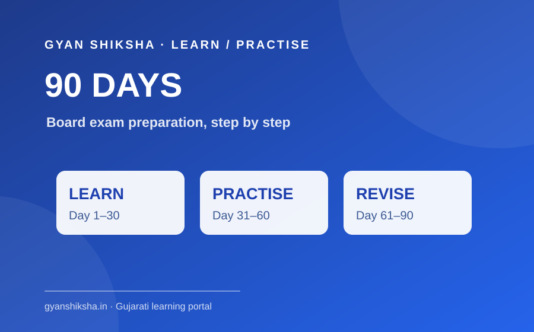
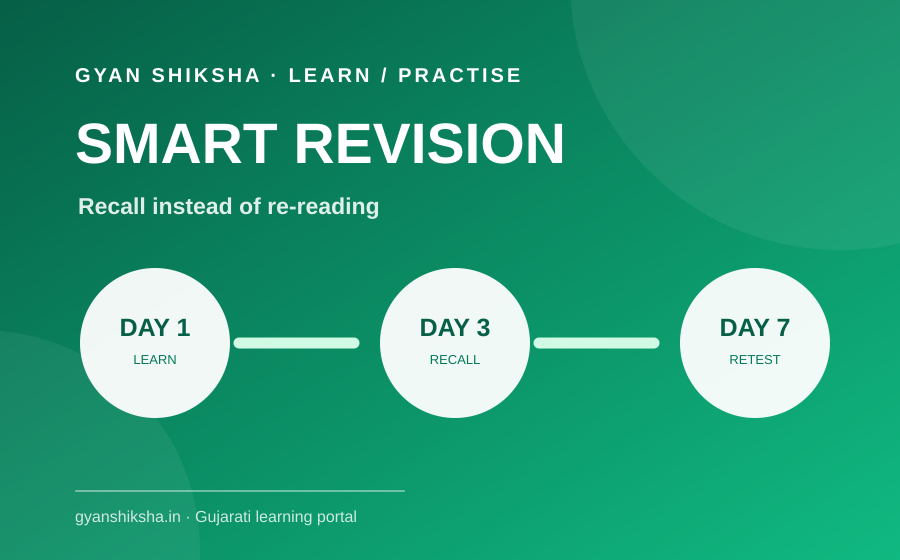
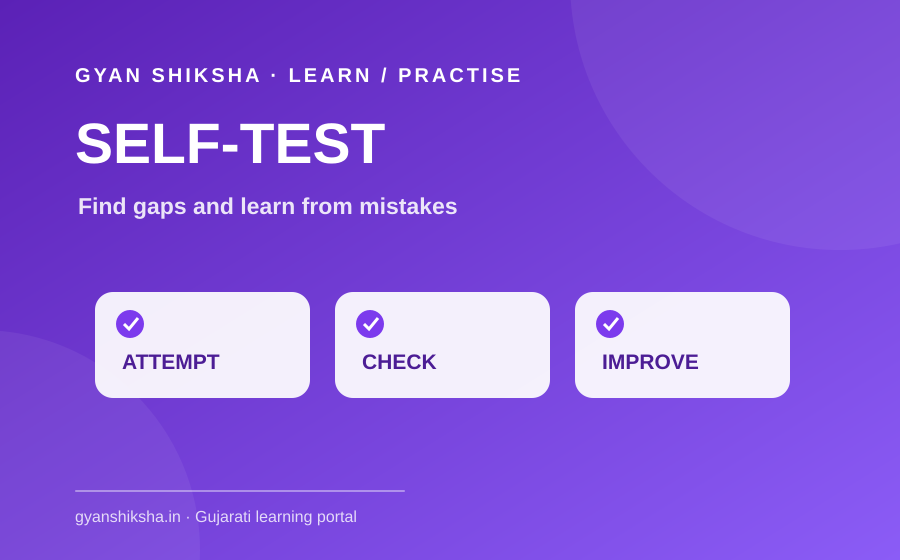
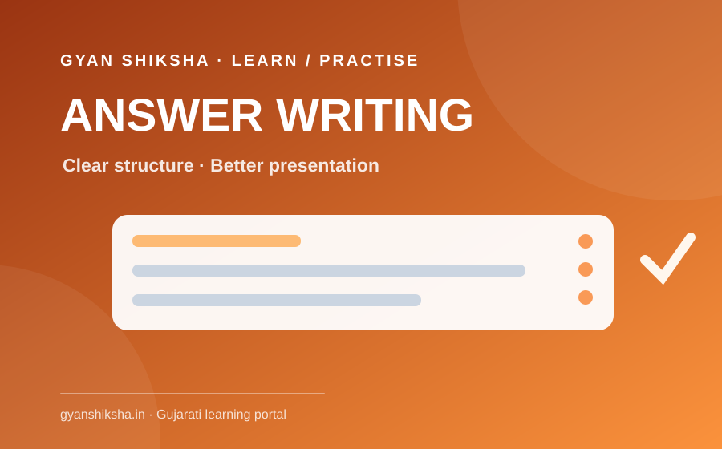
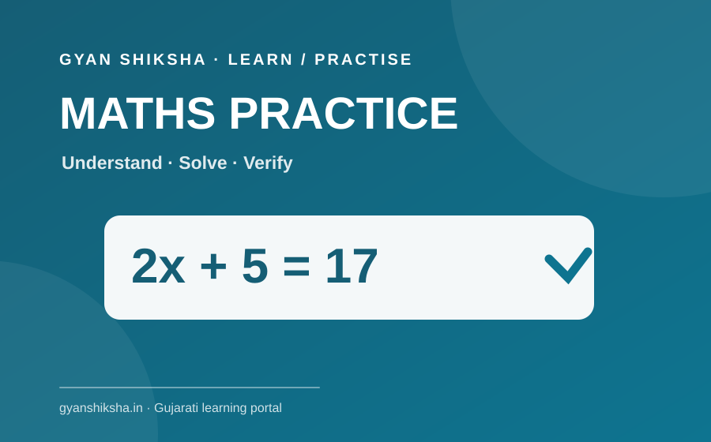
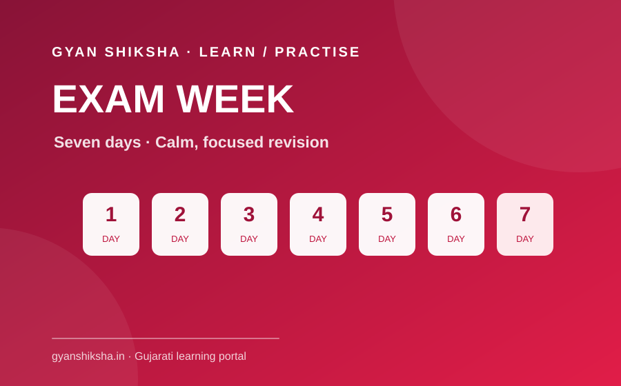

{{ post.category | default: "અભ્યાસ માર્ગદર્શન" | escape }}
{{ post.title | escape }}
{{ post.summary | default: post.description | escape }}
વાંચો →ધોરણ 10 અને 12 માટે અંગ્રેજી, ગણિત, વિજ્ઞાનના પગલાંવાર ઉદાહરણો, જાતે કરવાની પ્રેક્ટિસ અને ચકાસેલા જવાબો. સાથે બોર્ડ પરીક્ષા આયોજન અને અસરકારક પુનરાવર્તન માટે મૂળ ગુજરાતી માર્ગદર્શિકા.
{{ post.summary | default: post.description | escape }}
વાંચો →શાળા અને ટ્યુશન સાથે રોજનો અભ્યાસ, વિરામ અને પુનરાવર્તન માટે સરળ યોજના.
વાંચો →
મોટા અભ્યાસક્રમને ત્રણ સરળ તબક્કામાં ગોઠવી તૈયારી અને પુનરાવર્તનને વ્યવસ્થિત બનાવો.
વાંચો →
ફક્ત વારંવાર વાંચવાને બદલે યાદ કરવાનો પ્રયાસ, ટૂંકું પુનરાવર્તન અને નબળા મુદ્દાઓની નોંધ કેવી રીતે મદદ કરે તે જાણો.
વાંચો →
ક્વિઝ અને પ્રેક્ટિસ ટેસ્ટનો ઉપયોગ માત્ર ગુણ માટે નહીં, પણ ક્યાં વધુ સમજવાની જરૂર છે તે શોધવા માટે કરો.
વાંચો →
પ્રશ્ન સમજીને વાંચવો, જવાબ ગોઠવીને લખવો, સમય બચાવવો અને અંતે જવાબ ચકાસવાની સરળ રીત.
વાંચો →
થતી ભૂલોની નોંધ, જુદા પ્રકારના દાખલાઓની પ્રેક્ટિસ અને સમય મર્યાદામાં સ્વ-ચકાસણીથી ગણિત સુધારો.
વાંચો →
છેલ્લા અઠવાડિયામાં શું પુનરાવર્તન કરવું, નબળા મુદ્દાઓ પર કેવી રીતે કામ કરવું અને રોજની ગતિ કેવી રીતે સ્થિર રાખવી તે જાણો.
વાંચો →સમય ગોઠવવામાં મુશ્કેલી હોય તો 90 દિવસની અભ્યાસ યોજના વાંચો. વાંચેલું યાદ ન રહેતું હોય તો પુનરાવર્તનની રીત જુઓ. વારંવાર એકસરખી ભૂલો થતી હોય તો સ્વ-કસોટી અને ગણિતની પ્રેક્ટિસવાળા લેખ મદદરૂપ થશે. પરીક્ષા નજીક હોય તો છેલ્લાં 7 દિવસની યોજના વાંચીને આજથી એક નાની રીત અમલમાં મૂકો.